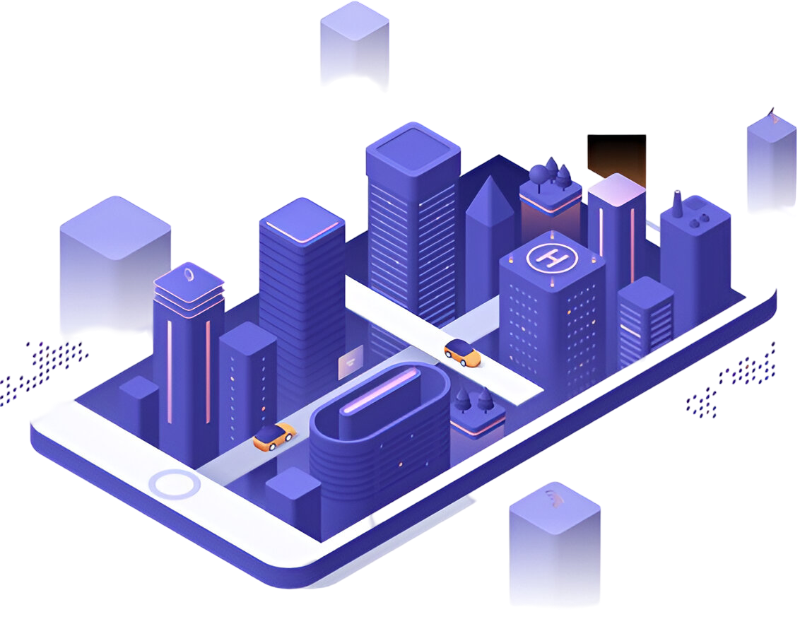

Smart City Software Platform
Our AI-powered urban operating system integrates IoT networks, big data analytics, and machine learning to optimize city operations. Enable real-time monitoring and automated control of energy grids, traffic flow, waste management, and public services through our unified digital platform. Drive sustainable growth while reducing operational costs by up to 40% through intelligent resource allocation and predictive maintenance systems.
